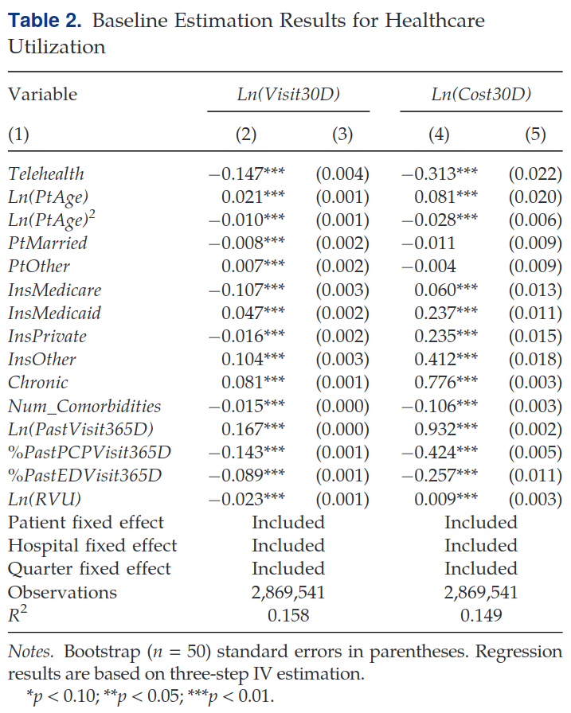

ECON 626: Final
\[ \def\R{{\mathbb{R}}} \def\Er{{\mathrm{E}}} \def\var{{\mathrm{Var}}} \newcommand\norm[1]{\left\lVert#1\right\rVert} \def\cov{{\mathrm{Cov}}} \def\En{{\mathbb{E}_n}} \def\rank{{\mathrm{rank}}} \newcommand{\inpr}{ \overset{p^*_{\scriptscriptstyle n}}{\longrightarrow}} \def\inprob{{\,{\buildrel p \over \rightarrow}\,}} \def\indist{\,{\buildrel d \over \rightarrow}\,} \DeclareMathOperator*{\plim}{plim} \DeclareMathOperator*{\argmax}{argmax} \DeclareMathOperator*{\argmin}{argmin} \]
You have 150 minutes to complete the exam. The last two pages have some possibly useful formulas.
There are 100 total points. Each part of a question is worth either 6 or 7 points. Some questions are harder than others. Be careful not to get stuck on one question for too long. To help with budgeting your time, I’ve labeled two questions as More difficult and two as Most difficult.
Air-Pollution Monitoring
In “Achieving Air Pollution Control Targets with Technology-Aided Monitoring: Better Enforcement or Localized Efforts?” Yang et al. (2024) study the impact of automated air pollution monitoring stations in Chinese cities.
Yang et al. (2024) estimate the following difference in differences regression \[ \ln(PM2.5_{ict}) = \alpha Auto_{ct} + \beta Near_i \times Auto_{ct} + \gamma X_{ct} + Cell_i + Year_t + \epsilon_{ict} \tag{1}\]
where \(\ln(PM2.5_{ict})\) is the log particulate matter in area cell \(i\) (measured by satelite) in city \(c\) and year \(t\), \(Auto_{ct}\) is whether the automated monitoring program is in effect in city \(c\) and year \(t\), \(Near_i\) is whether cell \(i\) is near an automated monitoring station, and \(X_{ct}\) are controls. Table 2 shows the results.

Identifying Assumption (7 points)
In columns (1) and (2), which omit \(\beta Near_i \times Auto_{ct}\), what assumption(s) must be made for the estimated coefficient on \(Auto_{ct}\) to be a consistent estimate of the average treatment effect on the treated of the automated monitoring program?
Solution. This difference in difference estimation is motivated by a (conditional) parallel trends assumption, i.e. if \(y_{ict} = \ln(PM2.5_{ict})\) with potential outcomes \(y_{ict}(auto)\), then the parallel trends assumption is \[ \Er[y_{ict}(0) - y_{ict-\ell}(0) | Auto_{ct}=1, Auto_{ct-\ell} = 0, X_{ct}, X_{ct-\ell}] = \Er[y_{ict}(0) - y_{ict-\ell}(0) | Auto_{ct}=0, Auto_{ct-\ell} = 0, X_{ct}, X_{ct-\ell}] \] However, the estimated linear model imposes some additional assumptions. Let \(\tilde{y}_{ict}(auto)\) be the residuals from the population regression of \(y_{ict}(auto)\) on \(X_{ct}\). If all cities were treated in the same period or treatment effects do not vary with time, then \(\alpha\) is an estimate of the ATT if we have parallel trends for the residualized outcomes. \[ \Er[\tilde{y}_{ict}(0) - \tilde{y}_{ict-\ell}(0) | Auto_{ct}=1, Auto_{ct-\ell} = 0 ] = \Er[\tilde{y}_{ict}(0) - \tilde{y}_{ict-\ell}(0) | Auto_{ct}=0, Auto_{ct-\ell} = 0] \]
A technically correct, but not the best answer, would be that \(\Er[Auto_{ct} \epsilon_{ict}] = 0\) and \(\Er[X_{ct}\epsilon_{ict}] = 0\).
Any answer here that correctly describe parallel trends should receive 5 points. For full credit the answer should also recognize that something more is needed.
Dependence (7 points)
The sample here consists of areas / “cells” \(i\) within cities \(c\) in years \(t\). How does this affect the consistency and asymptotic distribution of the estimates. What in the table, if anything, needs to be calculated differently than if observations were independent?
Solution. Standard errors should allow for spatial and/or time dependence. If we believe that observations from different cities are uncorrelated, then standard errors clustered on city level are sufficient. HAC standard errors could also be used.
TWFE (7 points)
The pollution monitoring program was implemented in three waves — some cities became treated earlier than others. Briefly describe a problem with Equation 1 and describe what should have been done instead.1
Solution. The fixed effects estimator is a weighted average, with possible negative weights, of time specific treatment effects. This can be problematic if the treatment effect varies with time. Instead of fixed effects, an estimator that allows for different effects for different time periods and cohorts should be used.
Linear Control (12 points, 6 for each part)
As noted on the table, columns (3), (5), and (6) include a ``concurrent policy’’ control. This is a concurrent policy also aimed at pollution control. This question analyzes whether it is sufficient to additively control for this concurrent policy. To simplify, denote the outcome by \(y_{ct}\), suppose the only treatment is \(Auto_{ct}\) and denote it by \(D_{ct}\), and let \(X_{ct} \in \{0,1\}\) be the concurrent policy. Also assume the treatment only begins at one time. Assume conditional parallel trends, \[ \Er[Y_{ct}(0) - Y_{c t-\ell}(0) | X_{ct}, X_{ct-\ell}, D_{ct} = 1, D_{c,t-\ell}=0] = \Er[Y_{ct}(0) - Y_{c t-\ell}(0) | X_{ct}, X_{c,t-\ell}, D_{ct} = 0, D_{ct-\ell} = 0]. \]
Do you think the regression, \[ y_{ct} = \alpha D_{ct} + \gamma X_{ct} + \lambda_c + \delta_t + \epsilon_{ct}, \] is likely to produce a consistent estimate of an interpretable treatment effect? Why or why not? (Your answer need not be completely rigorous; you can argue by analogy, e.g. “this is similar to XX in that YY, so it should be [not] okay.”)
Describe a consistent estimator for the average treatment effect on the treated.
Solution.
No, this regression is not guaranteed to produce a consistent estimate of an interpretable treatment effect. As with TWFE, we can write the estimate as \[ \hat{\alpha} = \sum y_{ct}(0) \hat{\omega}_{ct} + \sum (y_{ct}(1) - y_{ct}(0)) \hat{\omega}_{ct} \] where \[ \hat{\omega}_{ct} = \frac{\tilde{D}_{ct}}{\sum \tilde{D}_{ct}^2} \] and \(\tilde{D}_{ct}\) are the residuals from regressing \(D\) on \(X\) and fixed effects. As with just TWFE, some \(\tilde{D}_{ct}\) could be negative. Moreover, even if none are negative, \(\hat{\alpha}\) is a difficult to interpret weighted average of treatment effects.
A plug-in estimator will be a consistent estimator for the ATT. Conditional parallel trends implies that \[ ATT = \Er_X\left[ \Er[y_{ct}-y_{ct-\ell} | X_{ct},X_{ct-\ell},D_{ct}=1,D_{ct-\ell}=0] - \Er[y_{ct}-y_{ct-\ell} | X_{ct},X_{ct-\ell},D_{ct}=0,D_{ct-\ell}=0] \right]. \] Replacing the above population expectations with sample averages will give a consistent estimator.
Alternatively, a “saturated” regression that includes an interaction between \(D\) and \(X\) will also give a consistent estimate.
Media and Political Persuasion
In “Media and Political Persuasion: Evidence from Russia,” Enikolopov, Petrova, and Zhuravskaya (2011) compare electoral outcomes of 1999 parliamentary elections in Russia among geographical areas with differential access to the only national TV channel independent from the government. Availability of the independent TV channel (NTV) varies with geography due to the location of transmission towers and topography. The model of interest is
\[ v_s = \beta_0 + \beta_1 NTV_s + \epsilon_s \tag{2}\]
where \(v_s\) is the vote share of the incumbent party in region \(s\), and \(NTV_s\) is the portion of households in region \(s\) with NTV available. Assume that \(\Er[\epsilon_s NTV_s] = 0\) (the paper includes additional controls that make this assumption plausible, but the model is simplified for this question). Unfortunately, the authors do not observe \(NTV_s\) directly. Instead, they used a physics model of transmitter and household location and topography in between to construct a measure of NTV signal strength in each location. They then surveyed \(n\) households about NTV availability and estimated a probit model, \[ P(NTV_i | signal_i) = \Phi(\gamma signal_i) \] The estimates from this model were then used to construct \[ \widehat{NTV}_s = \Phi(\hat{\gamma} signal_s), \] and estimated the model of interest using \(\widehat{NTV}_s\) in place of \(NTV_s\)
Consistency (7 points)
(More difficult) Assume that the probit model is correctly specified so that \(NTV_s = \Phi(\gamma signal_s)\), and that \(|\gamma - \hat{\gamma}| = O_p(n^{-1/2})\). Show that the OLS estimate of Equation 2 using \(\widehat{NTV}_s\) in place of \(NTV_s\) is consistent as the number of regions, \(S\), and number of survey respondents, \(n\), both approach infinity. Clearly state any extra assumptions you make.
(Hint: to reduce notation, you may assume that \(NTV\) and \(\widehat{NTV}\) have mean zero. It suffices to show that \(\frac{1}{S} \sum_s \widehat{NTV}_s NTV_s \inprob \Er[NTV_s^2]\), \(\frac{1}{S} \sum_s \widehat{NTV}_s \epsilon_s \inprob \Er[NTV_s \epsilon_s]\), and \(\frac{1}{S} \sum_s \widehat{NTV}_s^2 \inprob \Er[NTV_s^2]\). Note that using the intermediate value theorem and the fact that the derivative of \(\Phi\) is bounded by \(1/\sqrt{2\pi}\), we have \(|NTV_s - \widehat{NTV}_s| \leq 1/\sqrt{2\pi} |signal_s(\gamma - \hat{\gamma})|\). The Cauchy-Schwarz inequality might be useful.).
Solution. The estimator is \[ \hat{\beta}_1 = \frac{\sum \widehat{NTV}_s v_s}{\sum \widehat{NTV}_s^2} \] Substituting in the model for \(v_s\), we have \[ \hat{\beta}_1 = \beta_1 \frac{\sum \widehat{NTV}_s NTV_s}{\sum \widehat{NTV}_s^2} + \frac{\sum \widehat{NTV}_s \epsilon_s}{\sum \widehat{NTV}_s^2} \] First, we show that the last term with \(\epsilon_s\) converges to 0. Note that \[ \begin{align*} \frac{1}{S} \sum \widehat{NTV}_s \epsilon_s & = \frac{1}{S} \sum NTV_s \epsilon_s + \frac{1}{S}\sum (\hat{NTV}_s - NTV_s)\epsilon_s \\ \left\vert\frac{1}{S} \sum \widehat{NTV}_s \epsilon_s\right\vert & \leq \left\vert \frac{1}{S} \sum NTV_s \epsilon_s \right\vert + \sqrt{ \left(\frac{1}{S} \sum 1/(2\pi) signal_s^2 (\gamma - \hat{\gamma})^2 \right) \left( \frac{1}{S} \sum \epsilon_s^2 \right) } & \inprob 0 \end{align*} \] where we used the hint and the Cauchy-Schwarz inequality in the second line, and the third line follows from assuming LLNs apply to \(\frac{1}{S} \sum NTV_s \epsilon_s\), \(\frac{1}{S}\sum signal_s^2\), and \(\frac{1}{S} \sum \epsilon_s^2\), and the assumption that \(\hat{\gamma} \inprob \gamma\).
An identical argument would show that \(\frac{1}{S} \sum \widehat{NTV}_s NTV_s \inprob \Er[NTV_s^2]\).
Finally, \[ \begin{align*} \frac{1}{S} \sum \widehat{NTV}_s^2 = & \frac{1}{S} \sum NTV_s^2 + \frac{1}{S} \sum (\widehat{NTV}_s^2 - NTV_s^2) \\ = & \frac{1}{S} \sum NTV_s^2 + \frac{1}{S} \sum \underbrace{2\Phi(\overline{\gamma signal_s}) \phi(\overline{\gamma signal_s})}_{\leq 2/\sqrt{2\pi}} (\hat{\gamma} - \gamma) \\ \inprob & \Er[NTV_s^2] \end{align*} \] where the second line used the intermediate value theorem and the last line used the assumption that \(\hat{\gamma} \inprob \gamma\) and an LLN applies to \(\frac{1}{S} \sum NTV_s^2\).
Estimation of \(\gamma\) (7 points)
Explain how to use GMM to estimate \(\gamma\). State the moment condition(s) and the objective function. (Hint: the assumptions above can be re-written as \(\Er[NTV_i - \Phi(\gamma signal_i) | signal_i] = 0\)).
Solution. The conditional moment restriction \(\Er[NTV_i - \Phi(\gamma signal_i) | signal_i] = 0\) implies that \(\Er[\left(NTV_i - \Phi(\gamma signal_i)\right)signal_i] = 0\). This gives one moment condition to estimate one parameter. We can estimate \(\gamma\) by minimizing the norm of the empirical moment, \[ \hat{\gamma} \in \argmin_\gamma \left( \frac{1}{n} \sum_i (NTV_i - \Phi(\gamma signal_i))signal_i \right)^2. \]
Asymptotic Normality (12 points, 6 for each part)
(More difficult) Suppose \(n >> S\), so that it is sensible to consider asymptotics where \(n \to \infty\), \(S \to \infty\), and \(S/n \to 0\). Assume that \(|signal_s|\) is bounded. Show that the usual OLS standard errors are correct when estimating Equation 2 with \(\widehat{NTV}_s\) in place of \(NTV_s\). (Hint: Derive the asymptotic distribution \(\sqrt{S}(\hat{\beta}_1 - \beta_1)\). The fact that \(\max_{1\leq s \leq S} |NTV_s - \widehat{NTV}_s| \leq 1/\sqrt{2\pi} (\max_s |signal_s| ) |\gamma - \hat{\gamma}|\) might be useful.).
(Most difficult) Now suppose \(n\) is close to \(S\), and consider asymptotics where \(n \to \infty\), \(S \to \infty\), and \(S/n \to c\) for some constant \(c > 0\). Derive the asymptotic distribution of \(\hat{\beta}_1\) when estimating Equation 2 with \(\widehat{NTV}_s\) in place of \(NTV_s\).
Solution.
- Note that \[ \sqrt{S}(\hat{\beta}_1 - \beta_1) = \frac{\frac{1}{\sqrt{S}} \sum_s \widehat{NTV}_s\left((NTV_s - \widehat{NTV}_s) + \epsilon_s\right)} { \frac{1}{S} \sum_s \widehat{NTV}_s^2} \] as in the consistency section, \(\frac{1}{S} \sum_s \widehat{NTV}_s^2 \inprob \Er[NTV_s^2]\). Also, similar to that section, \[ \frac{1}{\sqrt{S}} \sum_s \widehat{NTV}_s \epsilon_s = \frac{1}{\sqrt{S}} \sum_s NTV_s \epsilon_s + \frac{1}{\sqrt{S}} \sum_s (\widehat{NTV}_s - NTV_s) \epsilon_s \] and \[ \begin{align*} \left\vert \frac{1}{\sqrt{S}} \sum_s (\widehat{NTV}_s - NTV_s) \epsilon_s \right\vert \leq & \left\vert \frac{1}{\sqrt{S}} \sum_s |signal_s| \epsilon_s 1/(2\pi) |\hat{\gamma} - \gamma| \right\vert \\ \inprob & 0 \end{align*} \] where we used the intermediate value theorem on the first line, and then assumed that a CLT applies to \(\frac{1}{\sqrt{S}} \sum_s |signal_s|\epsilon_s\), and the fact that \(\hat{\gamma} \inprob \gamma\) to get the second line.
Next, note that
\[ \begin{align*} \left\vert \frac{1}{\sqrt{S}} \sum_s \widehat{NTV}_s\left((NTV_s - \widehat{NTV}_s) \right) \right\vert & \leq \left\vert \frac{1}{\sqrt{S}} \sum_s 1/\sqrt{2\pi} |signal_s(\gamma - \hat{\gamma}| \right\vert \\ & \leq \sqrt{S} B |\gamma - \hat{\gamma}| \\ & \leq O_p\left(\sqrt{S/n}\right) \inprob 0 \end{align*} \]
where we used the fact that \(|\widehat{NTV}| < 1\) and the assumption that \(|signal_s|\) is bounded.
Finally, we can conclude that \[ \sqrt{S}(\hat{\beta}_1 - \beta_1) = \frac{\frac{1}{\sqrt{S}} \sum_s NTV_s \epsilon_s}{\frac{1}{S} \sum_s NTV_s^2} + o_p(1) \indist N(0,V), \] the same asymptotic distribution as if \(NTV_s\) were observed.
- I revised the question to not have this part, but the idea is that under this assumption, \[ \frac{1}{\sqrt{S}} \sum_s \widehat{NTV}_s\left((NTV_s - \widehat{NTV}_s) \right) \] will no longer be \(o_p(1)\) and instead will contribute another term to the asymptotic distribution, which reflects estimation error in \(\hat{\gamma}\).
Telehealth and Healthcare Utilization
In “Impact of Telehealth and Process Virtualization on Healthcare Utilization” Ayabakan, Bardhan, and Zheng (2024) study the impact of telehealth visits on subsequent healthcare utilitization. They estimate the following linear model: \[ Util_{iht} = \beta_1 Telehealth_{iht} + \beta Controls_{iht} + \theta_i + \varphi_h + \lambda_t + \epsilon_{iht} \] where \(Util_{iht}\) is a measure of healthcare utilization in the next 30 days (either number of visits or cost), \(Telehealth_{iht}\) is an indicator for whether the initial visit was via telehealth or in-person, \(\theta_i\) are patient fixed effects, \(\varphi_h\) are healthcare provider fixed effects, and \(\lambda_t\) are time (quarter) fixed effects. Controls include patient medical history and provider characteristics.
Endogeneity (7 points)
Give one reason why \(\Er[Telehealth_{iht} \epsilon_{iht}]\) might not be zero, speculate on the sign of \(\Er[Telehealth_{iht} \epsilon_{iht}]\), and say whether whether you expect \(\hat{\beta}_1^{OLS}\) to be greater or less than \(\beta_1\).
Solution. Patients who choose telehealth instead of an in person visit are likely to have less severe problems, so I think \(\Er[Telehealth_{iht} \epsilon_{iht}] < 0\). \(\plim \hat{\beta}_1 = \beta_1 + \frac{\Er[\epsilon \widetilde{Telehealth}_{iht}]}{\Er[\widetilde{Telehealth}_{iht}]}\), so I expect \(\hat{\beta}_1\) to be less than \(\beta_1\).
Instrument (7 points)
As an instrument for \(Telehealth_{iht}\) the authors use the distance from patient \(i\) to provider \(h\) minus the distance from patient \(i\) to the closest provider. What assumptions must this instrument satisfy for the IV estimator to be consistent?
Solution. The instrument must be relevant \(\Er[Telehealth_{iht} Z_{iht}] \neq 0\) and exogenous, \(\Er[Z_{iht} \epsilon_{iht}] = 0\). It and other variables must also satisfy enough regularity conditions for the LLN to apply (it is okay not to mention this).
Instrument Strength (7 points)
The paper does not report the first stage, but the authors do write
The Kleibergen-Paap rank Wald F statistic is 74.109, which is above the 10% maximal Stock-Yogo critical value, suggesting that the maximum bias in our IV approach can be at most 10% of the bias in an OLS approach. Hence, we conclude that our IVs are not weak and meet the necessary criteria for selection.
The authors then proceed with reporting standard IV standard errors and confidence intervals. What assumption are the authors checking? Do you agree with their conclusion? What, if anything, would you do differently?
Solution. The authors are checking for instrument relevance. Recent research argues that the Stock-Yogo critical value is not stringent enough and \(F>100\) is needed. Their F statistic is close, but to be safe, I would use an identification robust inference method to calculate confidence intervals.
Dependence (7 points)
Table 2 below shows the IV estimates from Ayabakan, Bardhan, and Zheng (2024). Given the structure of the data (it has repeated observations from the same patients, hospitals, and quarters), what is an appropriate assumption to make about the dependence of \(\epsilon_{iht}\)? Briefly describe how standard errors could be calculated with this assumption.
Solution. The standard errors should be clustered to allow for dependence. It seems sensible here to do two way clustering on patient and hospital.

LATE? (7 points)
Ayabakan, Bardhan, and Zheng (2024) do not use standard 2SLS. Their reasoning is:
When the endogenous variable is binary, a standard 2SLS approach may yield inconsistent estimates (referred to as forbidden regression) because the fitted values of a binary variable from the first stage estimation will not be binary, nor will they be probabilistic in the second stage (Wooldridge 2010)
There is a grain of truth in what they say, but also some nonsense. What is a problem with 2SLS if the effect of telemedicine is heterogeneous?
Solution. If the effect is heterogenous, then a linear IV model is misspecified. If there were no controls and we believed that the instrument has a monotonic effect on telehealth, then the 2SLS would have a LATE intrepretation — it would be the average treatment effect for compliers. However, with linear controls, the LATE interpretation breaks down, and 2SLS no longer captures any interpretable treatment effect.
Nonstandard 3SLS (7 points)
(Most difficult) Instead of 2SLS, Ayabakan, Bardhan, and Zheng (2024) use a three step procedure that they describe as follows:
Therefore, we adopt a three-step approach where we first estimated a Probit model and regressed Telehealth on our instrumental variable and other controls, including patient, hospital, and time fixed effects (Angrist and Pischke 2008). In the second step, we calculate the predicted values of Telehealth from the first stage, which we denote as Telehealth_hat. In the third step, we follow a regular 2SLS estimation approach with Telehealth_hat being the only IV for the endogenous Telehealth variable. This estimation produces consistent and unbiased estimates (Angrist and Pischke 2008).
Consider a simplified setting without control variables or fixed effects. Then the three-step estimator described above becomes:
- Estimate a probit model for \(Telehealth_{iht}\) \[ \hat{\gamma} = \argmax_\gamma \sum_{i,h,t} Telehealth_{iht} \log \Phi(\gamma_0 + \gamma_1 Z_{iht}) + (1-Telehealth_{iht}) \log (1-\Phi(\gamma_0 + \gamma_1 Z_{iht})) \]
- First stage of 2SLS with instrument \(\widehat{Telehealth}_{iht} = \Phi(\hat{\gamma}_0 + \hat{\gamma}_1 Z_{iht} )\)
- Second stage gives \(\hat{\beta}_1 = \frac{\sum \widehat{Telehealth}_{iht} (Util_{iht} - \overline{Util})}{\sum \widehat{Telehealth}_{iht} (Telehealth_{iht} - \overline{Telehealth})}\)
Show that this procedure is consistent. State any additional assumptions needed. For the first step, it is okay to just make a high-level assumption like \(\plim \hat{\gamma}\) exists.
Solution. To reduce notation, let \(x_j = Telehealth_{iht}\), \(y_j = Util_{iht}\), and \(z_j = (1,Z_{iht})'\). Also assume both \(x\) and \(y\) have mean 0, so the model is simply \[ y = x\beta + \epsilon \] The estimator can be written \[ \begin{align*} \hat{\beta} = & \frac{\sum \Phi(z_j'\hat{\gamma}) y_j}{\sum \Phi(z_j'\hat{\gamma}) x_j} \\ = & \beta + \frac{\sum \Phi(z_j'\hat{\gamma}) \epsilon_j}{\sum \Phi(z_j'\hat{\gamma}) x_j} \end{align*} \] Assume that \(\plim \hat{\gamma} = \gamma\) exists. Write the numerator of \(\hat{\beta} - \beta\) as \[ \frac{1}{n} \sum \Phi(z_j'\hat{\gamma}) \epsilon_j = \frac{1}{n} \sum \Phi(z_j'\gamma) \epsilon_j + \frac{1}{n} \sum \left(\Phi(z_j'\hat{\gamma})-\Phi(z_j'\gamma)\right) \epsilon_j \] The intermediate value theorem and the fact that the derivative of \(\Phi\) is bounded imply that \[ \left\vert \frac{1}{n} \sum \left(\Phi(z_j'\hat{\gamma})-\Phi(z_j'\gamma)\right) \epsilon_j \right\vert \leq \Vert \hat{\gamma} - \gamma \Vert \frac{B}{n} \sum \Vert z_j \epsilon_j \Vert \] If we assume that an LLN applies to \(\frac{1}{n} \sum \Vert z_j \epsilon_j \Vert \inprob \Er[\Vert z\epsilon \Vert]\), then \(\frac{1}{n} \sum \left(\Phi(z_j'\hat{\gamma})-\Phi(z_j'\gamma)\right) \epsilon_j\inprob 0\).
An identical argument shows that \[ \frac{1}{n} \sum \Phi(z_j'\hat{\gamma}) x_j = \frac{1}{n} \sum \Phi(z_j'\gamma) x_j + o_p(1) \]
Assume that the LLN applies so \(\frac{1}{n} \sum \Phi(z_j'\gamma) \epsilon_j \inprob 0\) and \(\frac{1}{n} \sum \Phi(z_j'\gamma) x_j \inprob \Er[\Phi(z_j'\gamma)x_j] \neq 0\). Conclude that \(\hat{\beta} \inprob \beta\).
References
Definitions and Results
Measure and Probability:
Monotone convergence: If \(f_n:\Omega \to \mathbf{R}\) are measurable, \(f_{n}\geq 0\), and for each \(\omega \in \Omega\), \(f_{n}(\omega )\uparrow f(\omega )\), then \(\int f_{n}d\mu \uparrow \int fd\mu\) as \(n\rightarrow \infty\)
Dominated converegence: If \(f_n:\Omega \to \mathbf{R}\) are measurable, and for each \(\omega \in \Omega\), \(f_{n}(\omega )\rightarrow f(\omega ).\) Furthermore, for some \(g\geq 0\) such that \(\int gd\mu <\infty\), \(|f_{n}|\leq g\) for each \(n\geq 1\). Then, \(\int f_{n}d\mu \rightarrow \int fd\mu\)
Markov’s inequality: \(P(|X|>\epsilon) \leq \frac{\Er[|X|^k]}{\epsilon^k}\) \(\forall \epsilon > 0, k > 0\)
Jensen’s inequality: if \(g\) is convex, then \(g(\Er[X]) \leq \Er[g(X)]\)
Cauchy-Schwarz inequality: \(\left(\Er[XY]\right)^2 \leq \Er[X^2] \Er[Y^2]\)
Conditional expection of \(Y\) given \(\sigma\)-field \(\mathscr{G}\) satisfies \(\int_A \Er[Y|\mathscr{G}] dP = \int_A Y dP\) \(\forall A \in \mathscr{G}\)
Identification \(X\) observed, distribution \(P_X\), probability model \(\mathcal{P}\)
- \(\theta_0 \in \R^k\) is identified in \(\mathcal{P}\) if there exists a known \(\psi: \mathcal{P} \to \R^k\) s.t. \(\theta_0 = \psi(P_X)\)
- \(\mathcal{P} = \{ P(\cdot; s) : s \in S \}\), two structures \(s\) and \(\tilde{s}\) in \(S\) are observationally equivalent if they imply the same distribution for the observed data, i.e. \[ P(B;s) = P(B; \tilde{s}) \] for all \(B \in \sigma(X)\).
- Let \(\lambda: S \to \R^k\), \(\theta\) is observationally equivalent to \(\tilde{\theta}\) if \(\exists s, \tilde{s} \in S\) that are observationally equivalent and \(\theta = \lambda(s)\) and \(\tilde{\theta} = \lambda(\tilde{s})\)
- \(s_0 \in S\) is identified if there is no \(s \neq s_0\) that is observationally equivalent to \(s_0\)
- \(\theta_0\) is identified (in \(S\)) if there is no observationally equivalent \(\theta \neq \theta_0\)
Cramér-Rao Bound: in the parametric model \(P_X \in \{P_\theta: \theta \in \R^d\}\) with likelihood \(\ell(\theta;x)\), if appropriate derivatives and integrals can be interchanged, then for any unbiased estimator \(\tau(X)\), \[ \var_\theta(\tau(X)) \geq I(\theta)^{-1} \] where \(I(\theta) = \int s(x,\theta) s(x,\theta)' dP_\theta(x) = \Er[H(x,\theta)]\) and \(s(x,\theta) = \frac{\partial \log \ell(\theta;x)}{\partial \theta}\)
Hypothesis testing:
- \(P(\text{reject } H_0 | P_x \in \mathcal{P}_0)\)=Type I error rate \(=P_x(C)\)
- \(P(\text{fail to reject } H_0 | P_x \in \mathcal{P}_1)\)=Type II error rate
- \(P(\text{reject } H_0 | P_x \in \mathcal{P}_1)\) = power
- \(\sup_{P_x \in \mathcal{P}_0} P_x(C)\) = size of test
- Neyman-Pearson Lemma: Let \(\Theta = \{0, 1\}\), \(f_0\) and \(f_1\) be densities of \(P_0\) and \(P_1\), \(\tau(x) =f_1(x)/f_0(x)\) and \(C^* =\{x \in X: \tau(x) > c\}\). Then among all tests \(C\) s.t. \(P_0(C) = P_0(C^*)\), \(C^*\) is most powerful.
Projection: \(P_L y \in L\) is the projection of \(y\) on \(L\) if \[ \norm{y - P_L y } = \inf_{w \in L} \norm{y - w} \]
- \(P_L y\) exists, is unique, and is a linear function of \(y\)
- For any \(y_1^* \in L\), \(y_1^* = P_L y\) iff \(y- y_1^* \perp L\)
- \(G = P_L\) iff \(Gy = y \forall y \in L\) and \(Gy = 0 \forall y \in L^\perp\)
- Linear \(G: V \to V\) is a projection map onto its range, \(\mathcal{R}(G)\), iff \(G\) is idempotent and symmetric.
Gauss-Markov: \(Y = \theta + u\) with \(\theta \in L \subset \R^n\), a known subspace. If \(\Er[u] = 0\) and \(\Er[uu'] = \sigma^2 I_n\), then the best linear unbiased estimator (BLUE) of \(a'\theta = a'\hat{\theta}\) where \(\hat{\theta} = P_L y\)
Convergence in probability:
- \(X_1, X_2, ...\) converge in probability to \(Y\) if \(\forall \epsilon > 0\), \(\lim_{n \to \infty} P(\norm{X_n -Y} > \epsilon) = 0\)
- If \(\lim_{n \to \infty} \Er[ \norm{X_n - Y}^p ] \to 0\), then \(X_n \inprob Y\)
- If \(X_n \inprob X\), and \(f\) continuous, then \(f(X_n) \inprob f(X)\)
- Weak LLN: if \(X_1, ..., X_n\) are i.i.d. and \(\Er[X^2]\) exists, then \(\frac{1}{n} \sum_{i=1}^n X_i \inprob \Er[X]\)
- \(X_n = O_p(b_n)\) if \(\forall \epsilon>0\) \(\exists M_\epsilon\) s.t. \(\lim\sup P(\frac{\norm{X_n}}{b_n} \geq M_\epsilon) < \epsilon\)
- \(X_n = o_p(b_n)\) if \(\frac{X_n}{b_n} \inprob 0\)
Convergence in distribution:
- \(X_1, X_2, ...\) converge in distribution to \(X\) if \(\forall f \in \mathcal{C}_b\), \(\Er[f(X_n)] \to \Er[f(X)]\)
- If \(X_n \indist X\) and \(g\) is continuous, then \(g(X_n) \indist g(X)\)
- Slutsky’s lemma: if \(Y_n \inprob c\) and \(X_n \indist X\) and \(g\) is continuious, then \(g(Y_n, X_n) \indist g(c,X)\)
- Levy’s Continuity Theorem: \(X_n \indist X\) iff \(\Er[e^{it'X_n}] \to \Er[e^{it'X}] \forall t\)
- CLT: if \(X_1, ..., X_n\) are i.i.d. with \(\Er[X_1] = \mu\) and \(\var(X_1) = \sigma^2\), then \(\frac{1}{\sqrt{n}} \sum_{i=1}^n \frac{X_i - \mu}{\sigma} \indist N(0,1)\)
- Delta Method: suppose \(\sqrt{n}(\hat{\theta} - \theta_0) \indist S\) and \(h\) is differentiable, then \(\sqrt{n}(h(\hat{\theta}) - h(\theta_0)) \indist \nabla_h(\theta_0) S\)
Asymptotic distribution of OLS:
- Model \(Y_i = X_i'\beta + \epsilon_i\)
- \(\hat{\beta}^{OLS} = (X'X)^{-1} X'y\)
- If observations are i.i.d., \(\Er[X_i \epsilon] = 0\), \(\Er[X_i X_i'] < \infty\), and \(\Er[X_i X_i' \epsilon_i^2] < \infty\), then \[ \sqrt{n}(\hat{\beta}^{OLS} - \beta) \left((\frac{1}{n} X'X)^{-1} \left( \frac{1}{n} \sum X_i X_i' \hat{\epsilon}_i^2 \right) (\frac{1}{n} X'X)^{-1} \right)^{-1/2} \indist N(0,I) \]
Difference in differences:
- TWFE: \(y_{it} = \beta D_{it} + \alpha_i + \delta_t + \epsilon_{it}\)
- \(\hat{\beta}^{FE} = \sum_{i=1,t=1}^{n,T} y_{it}(0) \hat{\omega}_{it} + \sum_{i=1,t=1}^{n,T} D_{it} (y_{it}(1) - y_{it}(0)) \hat{\omega}_{it}\)
- where \(\hat{\omega}_{it} = \frac{D_{it} - \bar{D}_i - \bar{D}_t + \bar{D}}{\sum_{j,s} (D_{jt} - \bar{D}_j - \bar{D}_s + \bar{D})^2}\)
IV
- \(\hat{\beta}^{2SLS} = (X'P_Z X)^{-1} (X' P_Z y)\)
- If observations are i.i.d. \(rank(\Er[X_i Z_i']) = k\), \(\Er[Z_i \epsilon_i] = 0\), \(\Er\norm{X_i}^4 < \infty\), \(\Er\norm{Z_i}^4 < \infty\), \(\Er[\epsilon_i^2 | Z_i] = \sigma^2\), and \(\Er[Z_i Z_i']\) is invertible, then \[ \sqrt{n}(\hat{\beta}^{2SLS} - \beta) \indist N\left(0, \sigma^2 \left\lbrace \Er[X_i Z_i'] \Er[Z_i Z_i']^{-1} \Er[Z_i X_i'] \right\rbrace^{-1} \right) \]
- J-test: under \(H_0: \Er[Z_i(Y-X_i'\beta_0)] = 0\), \[ J = n\left(\frac{1}{n}Z'(y - X\hat{\beta}^{2SLS}) \right)' \hat{C}\left(\frac{1}{n}Z'(y - X\hat{\beta}^{2SLS}) \right) \indist \chi^2_{d-k} \]
- AR-test: under \(H_0: \beta = \beta_0\), \[ AR(\beta) = n\left(\frac{1}{n}Z'(y - X\beta) \right)' \hat{\Sigma}(\beta)^{-1}\left(\frac{1}{n}Z'(y - X\beta) \right) \indist \chi^2_d \]
GMM : \(\Er\left[g(Z_i,\theta_0) \right] = 0\) iff \(\theta=\theta_0\)
- Estimator \(\hat\theta = \argmin_\theta \frac{1}{2} \En[g(Z_i,\theta)]'S_n'S_n\En[g(Z_i,\theta)]\)
- Consistent if:
- \(\exists \theta_0 \in \Theta\) s.t. \(\forall \epsilon>0\), \(\inf_{\theta: \norm{\theta-\theta_0} > \epsilon} \norm{\Er[g(Z_i,\theta)]} > \norm{\Er[g(Z_i,\theta_0)]}\)
- \(\sup_{\theta \in \Theta} \norm{\En[g(Z_i,\theta)] - \Er[g(Z_i,\theta)]} \inprob 0\)
- \(S_n \inprob S\)
- Asymptotic normality if:
- \(\theta_0 \in int(\Theta)\), & \(g(z,\theta)\) is twice continuously differentiable
- \(\sqrt{n} \frac{\partial}{\partial \theta} \hat{Q}^{GMM}(\theta_0) \indist N(0,\Omega)\)
- \(\sup_{\theta \in int(\Theta)} \norm{\frac{\partial^2}{\partial \theta \partial \theta'} \hat{Q}^{GMM}(\theta) - B(\theta)} \inprob 0\) with \(B(\cdot)\) continuous at \(\theta_0\) and \(B(\theta_0) > 0\)
Then \(\sqrt{n}(\hat{\theta} - \theta_0) \indist N(0, B_0^{-1} \Omega_0 B_0^{-1})\)